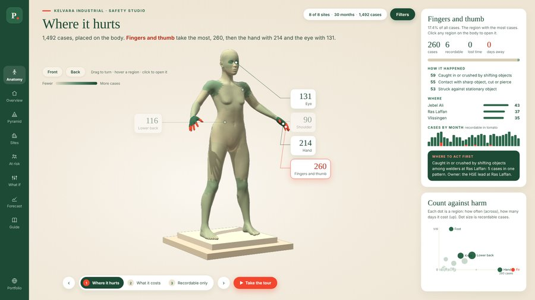
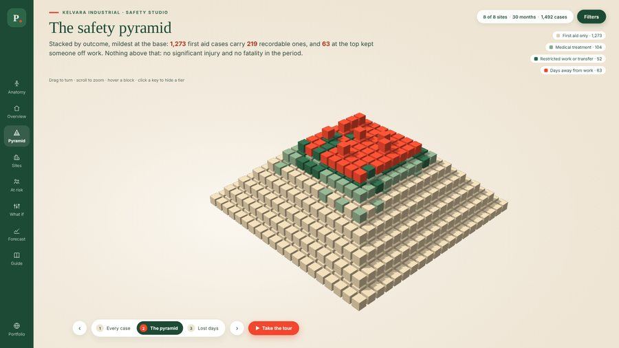
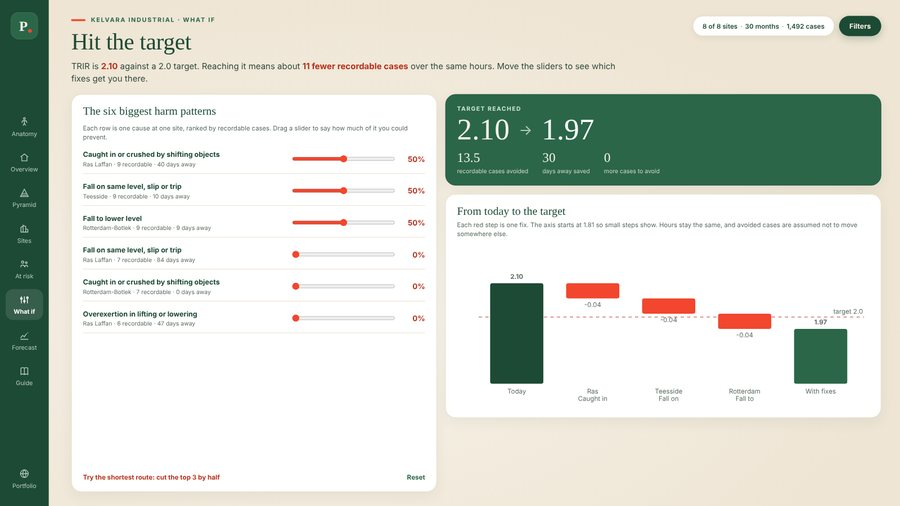
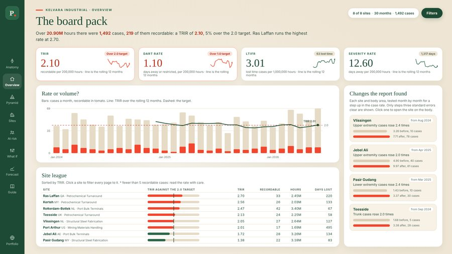

The question
Is it a rate problem or a volume problem?
A site that doubles its headcount will have more injuries without being any less safe. So every number in the report is a rate: cases per 200,000 hours worked, always divided by the hours of the same selection. Filter to one site, one shift or one group of workers, and the denominator follows.
For a site manager
For the safety lead
For the director
The test
Four problems hidden under a TRIR of 2.1
Each one was planted in the data so it stays small in the group total. Here is what each looks like, and where the report surfaces it.
Problem 1 · Jebel Ali
A cheaper glove
From September 2025 the site switched to a glove with lower cut resistance. Hand and finger injuries rose from 3.3 to 8.8 per 200,000 hours, while the hours worked stayed flat. A rate step, not a volume step.
Where it shows: the hand lights up on the 3D body, the Overview's step finder flags the site, and Who's at risk shows wrong-spec PPE turning into recordables.
Problem 2 · Rotterdam-Botlek
Manual lifting, on nights only
A conveyor was retired in January 2026 and the night shift went back to lifting by hand. On that slice, lower-back cases went from 0.41 to 4.81 per 200,000 hours, and days away per 200,000 hours from 7.8 to 27.3. Invisible in the group rate.
Where it shows: filter to the site and the night shift; the lower back turns dark on the body and the Sites page shows the jump.
Problem 3 · Pasir Gudang
New starters' eyes
Headcount grew 40% from March 2026. Eye injuries looked in line with the extra hours, but 4 of the 7 were people in their first 90 days, a group that is 14% of the workforce: about 4 times their share.
Where it shows: Who's at risk, new starters chart: share of recordables divided by share of people.
Problem 4 · Port Arthur
A data problem, not a safety one
Two 2024 cases record 214 and 260 days away, past the 180-day cap in US record-keeping rules, and that year codes more cases as "multiple body parts", so every specific region looks lighter than it was.
The report does not fix this for you. It is the honest limit of any dashboard: it is only as good as the log behind it, so the Guide page says how to read the data, not just what it shows.
Lesson: check the log before trusting the chart.
A flag is a prompt to look, not a verdict
The Overview's step finder looks for a site where the rate for one part of the body rose to at least 1.8 times its earlier level, with a rough Poisson check that the rise is well past chance. It lists four changes. Jebel Ali is one of them; the other three, Vlissingen at the top, were not planted. That is how an alarm should behave: it points to where to look, and a person decides what it means.
What would help
Fix the right thing first
The What if page takes the six patterns that cause the most recordable cases and gives each a slider. Move one and the chart shows the route from today's rate to the target, one step per fix. Hours stay the same, and avoided cases are assumed not to move elsewhere; the page says so.
The report
Eight pages in one custom visual
Anatomy, Overview, Pyramid, Sites, Who's at risk, What if, Forecast and Guide. Filters for period, shift, workers, cases and sites follow you across every page, and the Guide shows every formula with the live numbers in it.




How it was built
One measure, one visual, no libraries
The design goal was speed and control: everything is computed in the browser from a compact payload, so a filter answers instantly and nothing depends on a third-party chart library.
Data
- A star schema: 13 dimensions, facts for cases, hours worked and leading indicators
- Body regions, causes and injury types coded to the OIICS standard
- Generated by a script, so every pattern is known
Model
- Power BI Project in TMDL
- One DAX measure packs the facts into about 60 KB of JSON
- Hours shipped separately, so every rate has the right denominator
3D
- A WebGL2 renderer of about 250 lines: lighting, shadows and click picking
- An open-licence body mesh, each vertex assigned to one of 27 regions by a Python script
Report
- Custom visual in TypeScript and plain JavaScript
- Hand-drawn SVG charts and headlines written from the data
- Tested in a browser harness the way Power BI loads it
Who it is for
Built to be adapted
The data is fictional, but the model takes any incident log with dates, sites, body parts and hours worked. If your safety data sits in spreadsheets or a reporting tool nobody opens, this is the kind of report I can build on it.
See it working
The live report runs on the fictional dataset, so you can click every region, filter every site and move every slider.